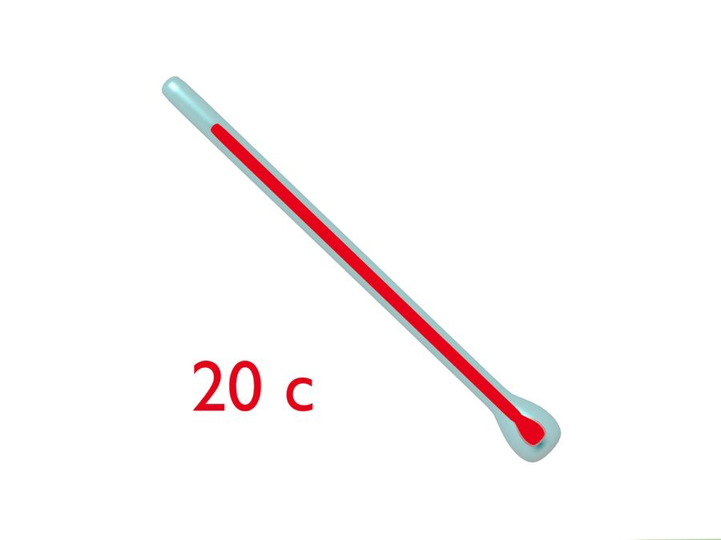

Bring the developing tank to the sink where you have the chemical jugs floating in water.
Check the developer chemical with the thermometer. If it's at 20 degrees Celsius, then you are ready to go. If it is higher than 20 degrees, then keep checking every 10 minutes until it's ready. If it is below 20 degrees, add some hot water to the sink the gallon jugs are floating in. Pour 1 ounce of the stock developing solution into the graduated cylinder and then add 7 ounces of 20 degrees Celsius water to that. You are making a "working" solution by using a 1:7 chemical to water ratio. To recap, you made a stock solution of the developing chemical by using a 1:3 chemical concentrate to water ratio, and then mixed that stock solution with a 1:7 working chemical to water ratio.
